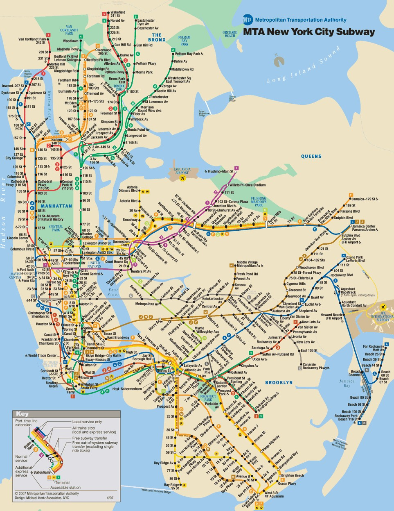

Welcome to NYC! Planning a trip to the five boroughs can be fun, easy, and fast! New York City is known for the public transportation, trains (and buses) are right around the corner.
If you are a Ramen noodle fanatic, make sure you go to TOTTO Ramen and Wok To Walk, both in Manhatan!
If you are an outdoor person, or if you want to scape the city for a while, make sure you visit Central Park (Manhattan) & Prospect Park (Brooklyn)!
If you are feeling creative or in need of inspiration, The Museum of Moving Image, or Whitney museum is the right place to be!
Catch a flick at AMC 25 Movie Theater!
Here is a map of the NYC Subway to help you get around!
